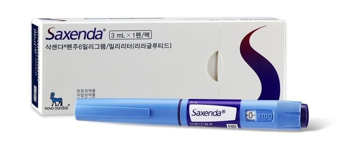
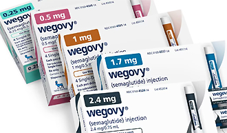
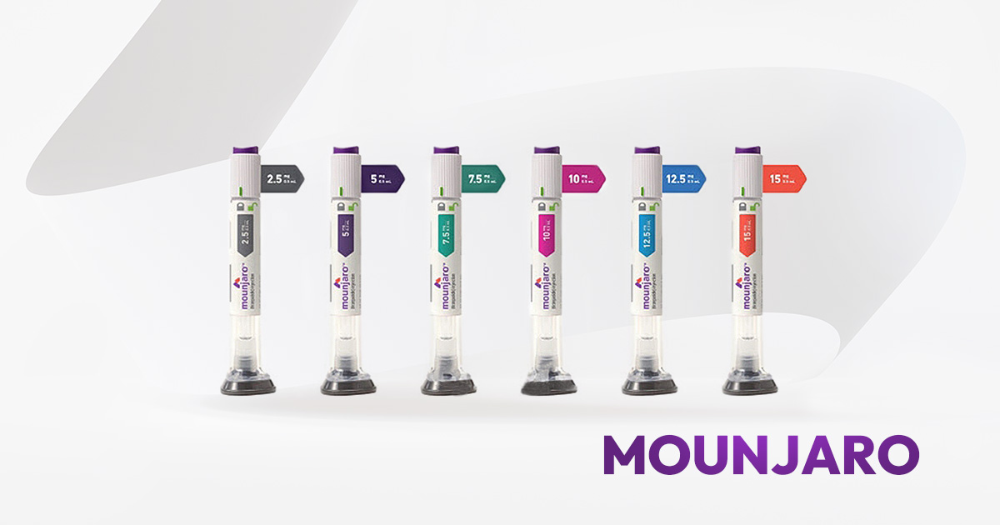

👁 —
🇰🇷 한국어
🇺🇸 EN
🇯🇵 JP
🇨🇳 CN
🇹🇼 TW
📱 일반인
🏃♂️ 다이어터
🥼 전문가
삭센다 (Saxenda®)
야식 중독 극복

"배고픔을 줄여주는 기본 주사"
뇌에 "배 안 고파"라는 신호를 보내어 자연스럽게 음식을 덜 먹도록 도와주는 비만 치료제입니다.
투여 주기: 하루에 1번 매일 주사체중 감량: 평균 5~10% 감소 효과한줄 요약: 야식 끊기 힘들고 식탐 조절이 안 되는 분들에게 적합합니다.
위고비 (Wegovy®)
식사량 전반 감소

"삭센다의 강력한 업그레이드 버전"
삭센다와 원리는 비슷하지만, 몸속에서 훨씬 강하고 오랜 기간 작동하여 식욕을 완벽히 통제합니다.
투여 주기: 일주일에 딱 1번만 주사체중 감량: 평균 15% 전후의 높은 체중 감소한줄 요약: 입이 짧아지고 먹는 양 자체가 통째로 줄어드는 느낌을 줍니다.
마운자로 (Mounjaro®)
체지방 집중 연소

"식욕 억제는 기본, 지방까지 직접 태우는 약"
음식 섭취량을 줄여줄 뿐만 아니라, 몸이 들어온 영양소를 처리하는 대사 효율성까지 획기적으로 개선합니다.
투여 주기: 일주일에 딱 1번 주사 (현재 가장 강력한 감량제)체중 감량: 평균 20% 이상의 압도적인 체중 감소 실현한줄 요약: 배고픔은 사라지고, 몸속 체지방 위주로 쏙 빠지는 현존 최고의 약물입니다.
💡 비만 치료제 한 줄 총정리
삭센다 ➔ 덜 먹게 만든다
위고비 ➔ 훨씬 덜 먹게 만든다
마운자로 ➔ 덜 먹게 만들고, 들어온 영양도 효율적으로 처리한다!
삭센다 (리라글루타이드)
지방 60~65% : 근육 35~40% 감소
작용 기전: 위 배출 속도 지연 ➔ 포만감 증가 및 식욕 감소 유도체성분 변화 데이터: 10kg 감량 시 지방 약 6~7kg, 근육 3~4kg 감소근손실 리스크: 식사량이 급격히 줄어들기 때문에 상대적으로 근손실 비율이 높음운동 가이드: 근육 방어를 위해 웨이트 트레이닝 병행이 필수적임
위고비 (세마글루타이드)
지방 60~65% : 근육 35~40% 감소
작용 기전: 강력하고 지속적인 GLP-1 자극 ➔ 음식 생각 및 식탐 감소 극대화체성분 변화 데이터: 15kg 감량 시 지방 약 10~11kg, 근육 4~5kg 감소운동 가이드: 뼈대 근육량 유지를 위해 고단백 식단 및 강도 높은 근력 운동 권장
마운자로 (티르제파타이드)
지방 70~75% : 근육 25~30% 감소
작용 기전: GLP-1 + GIP 이중 작용 ➔ 식욕 감소 + 인슐린 민감도 및 지방 대사 개선체성분 변화 데이터: 20kg 감량 시 지방 약 15~17kg, 근육은 단 3~4kg만 감소제지방(Lean Mass) 보존: 감량 폭이 압도적으로 크면서도 근육 감소 비율은 가장 낮음운동 가이드: 웨이트 병행 시 빠지는 무게의 대부분이 순수 지방 ➔ 최고의 체형 변화 체감
삭센다 (Liraglutide)
GLP-1 수용체 단독 작용제 (GLP-1 RA)
구조적 특성: 인간 GLP-1과 97% 상동성(homologous)을 가짐약동학(PK): 반감기 약 13시간 ➔ 1일 1회 피하주사(SC) 필수세포 생리학적 경로: 소장 L-cell 분비 호르몬 모방 ➔ 시상하부(ARC) 내 POMC/CART 신경원 활성화 및 NPY/AgRP 억제 ➔ 위 배출 속도 감소를 통한 기계적 포만감 증진작용 특성 (비유): 재무팀의 역할 ➔ "지출(섭취)을 줄여!" 기전에 한정됨
위고비 (Semaglutide)
지속성 획득 GLP-1 수용체 작용제
구조적 특성: Albumin binding 능력 상향 및 DPP-4 효소 분해 저항성 극대화약동학(PK): 반감기 약 1주일(7일)로 대폭 연장 ➔ 주 1회 피하주사(SC) 가능임상 체성분 변화 (STEP): 총 체중 감량 폭 중 지방 감소 비율 60~65%, 제지방 감소 비율 35~40%작용 특성 (비유): 강력해진 재무팀 ➔ 지속적이고 강박적인 비용(섭취량) 절감 유도
마운자로 (Tirzepatide)
세계 최초의 Dual GIP/GLP-1 Receptor Agonist
구조적 특성: 단일 분자 내 GIP 수용체 및 GLP-1 수용체를 동시 자극하는 이중 작용제약동학(PK): 반감기 약 5일 ➔ 주 1회 피하주사(SC) 최적화GIP 경로의 고유 이점 (십이지장 K-cell 경로): 췌장 내 포도당 의존적 인슐린 분비 촉진, 말초 지방조직의 대사 조절 및 정상화, 골격근 내 인슐린 감수성 증가 ➔ 근육 내 포도당 이용 증가로 이어져 근육 보존임상 체성분 변화 (SURMOUNT): 총 체중 감량량의 70~75%가 순수 지방 ➔ 제지방 감소는 25~30%로 방어근육 보존의 3대 요인: ① 인슐린 감수성 개선을 통한 근육 보존 ② 지방 산화(Lipid Oxidation) 증가로 지방 우선 소모 ③ 체중 감소량 대비 제지방 감소 비율 자체의 하락작용 특성 (비유): 재무팀 + 운영팀 합작 ➔ 비용(섭취)도 대폭 절감하고, 들어온 자원(영양)의 대사 효율도 개선
🎯 최종 결론 및 학술적 패러다임 변화
비만 치료의 패러다임이 단순한 '식욕 억제(지출 차단)'에서
'인크레틴 시스템 전체 활용을 통한 대사 효율 개선(운영 최적화)'으로 진화 중입니다.
📱 Public
🏃♂️ Dieter
🥼 Pro
Saxenda (Liraglutide)
Late-night Craving Control
"The Standard Hunger-Reducing Shot"
It sends a "not hungry" signal to your brain to help you naturally reduce your food intake.
Frequency: Once-daily injectionWeight Loss: Average 5–10% reductionSummary: Best for individuals who struggle with constant snacking or late-night eating.
Wegovy (Semaglutide)
Overall Food Intake Reduction
"The High-Powered Upgrade"
Shares a similar mechanism with Saxenda, but acts much longer and stronger in the body for total appetite management.
Frequency: Just once-weekly injectionWeight Loss: Average around 15% reductionSummary: Drastically decreases portions, making you feel completely indifferent to food.
Mounjaro (Tirzepatide)
Targeted Fat Burning
"Appetite Suppression + Direct Fat Burner"
Not only curbs your hunger but changes your metabolic efficiency to handle incoming energy much better.
Frequency: Once-weekly injection (The most potent agent available)Weight Loss: Overwhelming 20%+ average reductionSummary: Hunger fades away completely, melting fat while retaining maximum body strength.
Saxenda
60-65% Fat Loss : 35-40% Muscle Loss
Mechanism: Delays gastric emptying ➔ Prolongs satiety & suppresses appetite.Body Comp Changes: Out of 10kg lost, ~6-7kg is fat and 3-4kg is muscle.Muscle Atrophy Risk: Higher proportion of lean mass loss due to a sudden drop in daily nutrition.Workout Tip: Heavy resistance training is strongly recommended to protect muscle.
Wegovy
60-65% Fat Loss : 35-40% Muscle Loss
Mechanism: Sustained and intense GLP-1 stimulation ➔ Maximizes total food-thought suppression.Body Comp Changes: Out of 15kg lost, ~10-11kg is fat and 4-5kg is muscle.Workout Tip: High-protein diet combined with intense lifting is crucial to safeguard skeletal muscle.
Mounjaro
70-75% Fat Loss : 25-30% Muscle Loss
Mechanism: Dual GLP-1 + GIP pathways ➔ Appetite suppression + improved insulin sensitivity.Body Comp Changes: Out of 20kg lost, ~15-17kg is pure fat and only 3-4kg is muscle.Lean Mass Benefit: Shows the highest weight reduction with the lowest relative muscle loss.Workout Tip: Reshapes the body silhouettes phenomenally as almost all loss is driven from stubborn fat.
Saxenda (Liraglutide)
Selective GLP-1 Receptor Agonist (GLP-1 RA)
Structure: 97% homologous to native human GLP-1.Pharmacokinetics (PK): Half-life ~13 hours ➔ Mandates once-daily SC injection.Pathophysiology: Mimics L-cell incretin ➔ Activates ARC POMC/CART neurons and inhibits NPY/AgRP paths ➔ Mechanical satiety via delayed gastric emptying.Metaphor: The Finance Team ➔ Strictly limited to "cutting expenses" (intake control).
Wegovy (Semaglutide)
Long-Acting GLP-1 Receptor Agonist
Structure: Modified for increased albumin binding and robust resistance to DPP-4 degradation.Pharmacokinetics (PK): Half-life extended to ~7 days ➔ Once-weekly SC injection.Clinical Data (STEP Trials): Fat mass accounts for 60–65% of loss, lean mass accounts for 35–40%.Metaphor: Supercharged Finance Team ➔ Continuous and forceful cost-cutting.
Mounjaro (Tirzepatide)
First-in-class Dual GIP/GLP-1 Receptor Agonist
Structure: A single peptide molecule that synergistically activates both GIP and GLP-1 receptors.Pharmacokinetics (PK): Half-life ~5 days ➔ Optimized for once-weekly SC injection.GIP-driven Advantages (K-cell pathway): Potentiates glucose-dependent insulin secretion, normalizes lipid storage in adipose tissues, and enhances skeletal muscle insulin sensitivity ➔ Drives glucose utilization into muscle, maintaining structural integrity.Clinical Data (SURMOUNT Trials): 70–75% of total weight drop is fat mass, limiting lean mass loss to just 25–30%.Mechanisms of Muscle Sparing: ① Preserves tissue via skeletal glucose uptake ② Elevates lipid oxidation to burn fat preferentially ③ Drops the relative lean mass loss ratio drastically.Metaphor: Finance Team + Operations Team ➔ Drastically cuts costs (intake) while optimizing resource allocation (metabolic efficiency).
🎯 Scientific Paradigm Shift
Obesity medicine has evolved from basic "appetite suppression (spending cuts)"
to "improving metabolic efficiency via full coordination of the Incretin System (operational optimization)."
📱 一般
🏃♂️ ダイエッター
🥼 専門家
サクセンダ (Saxenda®)
夜食・食欲のコントロール
「お腹を空きにくくする基本の注射」
脳に「お腹が空いていない」というシグナルを送り、食べる量を自然に減らせる肥満治療薬です。
投与周期: 1日1回、毎日自己注射体重減少: 平均 5〜10% の減量効果一言まとめ: ついつい夜食を食べてしまう方や、食欲が抑えられない方に最適です。
ウゴービ (Wegovy®)
食事全体のボリュームを抑制
「サクセンダの強力な進化版」
サクセンダとメカニズムは似ていますが、体内でより強力かつ長時間作用し、食欲を徹底的に管理します。
投与周期: 週に1回だけの投与でOK体重減少: 平均約 15% 前後の高い減量効果一言まとめ: 食べる量そのものがガクッと減る感覚をはっきりと実感できます。
マンジャロ (Mounjaro®)
体脂肪を集中的に燃焼
「食欲を抑え、さらに脂肪を直接燃やす薬」
食事量を減らすだけでなく、摂取した栄養素をエネルギーに変える「代謝効率」を劇的に改善します。
投与周期: 週に1回（現在、最も強力な減量効果を持つ薬剤）体重減少: 平均 20% 以上の圧倒的な体重減少を達成一言まとめ: 空腹感が消え去り、筋肉を保ちながら体脂肪を中心に落とせる現役最強の薬です。
💡 抗肥満薬の一言まとめ
サクセンダ ➔ 食べる量を減らす
ウゴービ ➔ 食べる量を大幅に減らす
マンジャロ ➔ 食べる量を減らし、入ってきた栄養を効率よく処理する！
サクセンダ (リラグルチド)
脂肪 60〜65% : 筋肉 35〜40% 減少
作用機序: 胃排泄速度の遅延 ➔ 満腹感を高め、食欲低下を誘導体組成データ: 10kg減量時、脂肪約6〜7kg、筋肉3〜4kgの減少筋肉減少リスク: 食事量が急激に減るため、筋肉が落ちやすい傾向があります運動アドバイス: 筋肉を死守するため、ウェイトトレーニングの並行が必須
ウゴービ (セマグルチド)
脂肪 60〜65% : 筋肉 35〜40% 減少
作用機序: 強力かつ持続的なGLP-1刺激 ➔ 食べ物への執着や食欲を徹底排除体組成データ: 15kg減量時、脂肪約10〜11kg、筋肉4〜5kgの減少運動アドバイス: 骨格筋量を維持するため、高タンパク質な食事と筋トレが不可欠
マンジャロ (チルゼパチド)
脂肪 70〜75% : 筋肉 25〜30% 減少
作用機序: GLP-1 + GIP の二重作用 ➔ 食欲抑制 ＋ インスリン感受性と脂質代謝の改善体組成データ: 20kg減量時、脂肪約15〜17kgに対し、筋肉の減少はわずか3〜4kg除脂肪組織の保護: 減量幅が一番大きいにもかかわらず、筋肉の減少割合が最も低い運動アドバイス: 筋トレを並行すると落ちる体重のほとんどが純脂肪になり、最高のボディメイクが実現
サクセンダ (Liraglutide)
GLP-1受容体単独作動薬 (GLP-1 RA)
構造的特徴: ネイティブヒトGLP-1と97%の相同性(homologous)を持つ。薬物動態(PK): 半減期 約13時間 ➔ 1日1回の皮下投与(SC)が必要。細胞生理学的経路: 小腸L細胞分泌ホルモンを模倣 ➔ 視床下部弓状核(ARC)のPOMC/CARTニューロン活性化、NPY/AgRP抑制 ➔ 胃排泄遅延による機械的満腹感の持続。薬剤の役割 (比喩): 財務部の役割 ➔ 「支出（摂取）を減らせ！」という機序に限定。
ウゴービ (Semaglutide)
長時間作用型 GLP-1受容体作動薬
構造的特徴: アルブミン結合能の向上およびDPP-4酵素分解に対する高い抵抗性を獲得。薬物動態(PK): 半減期を約1週間（7日間）へ大幅延長 ➔ 週1回の皮下投与(SC)が可能。臨床体組成データ (STEP): 体重減少量のうち、脂肪減少が60〜65%、除脂肪組織減少が35〜40%。薬剤の役割 (比喩): 強化された財務部 ➔ 持続的かつ強力にコスト（食事量）の削減を主導。
マンジャロ (Tirzepatide)
世界初のGIP/GLP-1受容体デュアル作動薬
構造的特徴: 単一分子でGIP受容体とGLP-1受容体の双方を同時刺激する画期的な二重作動薬。薬物動態(PK): 半減期 約5日間 ➔ 週1回の皮下投与(SC)に最適化。GIP経路の固有メリット: 血糖依存的なインスリン分泌促進、末梢脂肪組織の代謝調節、骨格筋のインスリン感受性改善 ➔ 筋肉内グルコース利用亢進による筋肉保護。臨床体組成データ (SURMOUNT): 体重減少量の70〜75%が純脂肪 ➔ 除脂肪の減少を25〜30%に抑制。筋肉保持の3大要因: ①インスリン感受性改善による筋肉組織の保護 ②脂質酸化亢進による脂肪の優先消費 ③総減量量に対する除脂肪減少割合自体の低下。薬剤の役割 (比喩): 財務部 ＋ 業務推進部 ➔ コスト（摂取）を抑えつつ、入ってきた資源（栄養）の代謝・分配効率を最適化。
🎯 結論および学術的パラダイムの転換
肥満治療の本質は、単なる「食欲抑制（支出遮断）」から、
「インクレチンシステム全体の活用による代謝効率の改善（運用の最適化）」へと進化しています。
📱 大众
🏃♂️ 减肥者
🥼 专家
善纤达 (Saxenda®)
克制深夜暴食
"减少饥饿感的基础减重针"
通过向大脑发送"我不饿"的信号，帮助你自然而然地减少食物摄入量。
使用周期： 每天需要注射 1 次减重效果： 平均体重减轻 5% ~ 10%一句话总结： 适合难以戒掉夜宵、食欲旺盛且自控力较差的人群。
维高威 (Wegovy®)
整体饭量大幅缩减
"善纤达的强效升级版"
作用原理与善纤达类似，但在体内的作用时间更长、效果更强，可全方位控食。
使用周期： 每周仅需注射 1 次减重效果： 平均体重减轻达 15% 左右一句话总结： 让你胃口变小，深刻体会到对食物失去兴趣的感觉。
替尔泊肽/穆罕扎罗 (Mounjaro®)
集中燃烧体脂肪
"不仅强效控食，还能直接加速燃脂"
不仅能阻断饥饿感，还可以从根本上提高身体处理和代谢营养物质的效率。
使用周期： 每周注射 1 次（目前减重效果最顶级的药物）减重效果： 带来平均 20% 以上的颠覆性减重表现一句话总结： 饥饿感彻底消失，在不牺牲体力的情况下精准减掉纯脂肪。
💡 减重药物一句话核心总结
善纤达 ➔ 让你吃得少
维高威 ➔ 让你吃得明显更少
替尔泊肽 ➔ 让你吃得少，同时把吃进去的营养高效代谢掉！
善纤达 (利拉鲁肽)
脂肪减少 60~65% : 肌肉流失 35~40%
作用机制： 延缓胃排空速度 ➔ 延长饱腹感并降低食欲。体成分变化数据： 每减重 10kg，脂肪减少约 6~7kg，肌肉流失 3-4kg。肌肉流失风险： 由于饮食量短期内骤减，整体肌肉流失的比例相对较高。运动建议： 必须配合抗阻力量训练，以防止肌肉大幅退化。
维高威 (司美格鲁肽)
脂肪减少 60~65% : 肌肉流失 35~40%
作用机制： 强效且持续地刺激 GLP-1 ➔ 最大程度清除对食物的渴望与幻想。体成分变化数据： 每减重 15kg，脂肪减少约 10~11kg，肌肉流失 4-5kg。运动建议： 强烈建议实施高蛋白饮食，并进行高强度的抗阻训练。
替尔泊肽 (Tirzepatide)
脂肪减少 70~75% : 肌肉流失 25~30%
作用机制： GLP-1 + GIP 双靶点协同 ➔ 控食 ＋ 改善胰岛素敏感性与脂肪代谢。体成分变化数据： 即使大幅减重 20kg，脂肪减少高达 15~17kg，肌肉仅流失 3-4kg。去脂体重保护： 在减重幅度最大的前提下，实现了极低的肌肉流失率。运动建议： 配合力量训练能让减掉的几乎全为纯脂肪，身材线条的雕刻效果达到极致。
善纤达 (Liraglutide)
单靶点 GLP-1 受体激动剂 (GLP-1 RA)
结构特征： 与天然人源 GLP-1 具有 97% 的同源性 (Homologous)。药代动力学(PK)： 半衰期约为 13 小时 ➔ 每日须进行一次皮下注射 (SC)。细胞生理通路： 模拟小肠 L 细胞分泌的肠促胰素 ➔ 激活下丘脑弓状核 (ARC) 的 POMC/CART 神经元并抑制 NPY/AgRP 通路 ➔ 延缓胃排空以提供机械性饱腹感。作用特质（比喻）： 财务部的角色 ➔ 职能严格局限于"削减开支（控制摄入）"。
维高威 (Semaglutide)
长效 GLP-1 受体激动剂
结构特征： 通过修饰增加了白蛋白结合能力，并对 DPP-4 酶的降解产生了极强的抵抗力。药代动力学(PK)： 半衰期大幅延长至约 7 天 ➔ 实现了每周仅需一次皮下注射 (SC)。临床体成分数据 (STEP)： 体重减轻总量中，脂肪减少占 60-65%，去脂体重减少占 35-40%。作用特质（比喻）： 强力财务部 ➔ 持续且强硬地推行成本（摄入量）削减计划。
替尔泊肽 (Tirzepatide)
全球首个 GIP/GLP-1 受体双重激动剂
结构特征： 单个肽链分子，能够同时且协同地激活 GIP 受体与 GLP-1 受体。药代动力学(PK)： 半衰期约为 5 天 ➔ 完美适配每周一次的皮下注射 (SC)。GIP 通路的独特优势： 促进血糖依赖性胰岛素分泌；调控外周脂肪组织；增强骨骼肌的胰岛素敏感性 ➔ 保护肌肉结构。临床体成分数据 (SURMOUNT)： 总减重量中 70-75% 为纯脂肪，去脂体重流失率压低至 25-30%。肌肉保护三大核心要素： ① 改善胰岛素敏感性 ② 提升脂质氧化优先消耗脂肪 ③ 降低去脂体重相对流失比例。作用特质（比喻）： 财务部 + 运营部 ➔ 大幅削减成本的同时，全面优化代谢效率。
🎯 临床学术范式转移
肥胖医学的范式已从单纯的"抑制食欲（切断支出）"
演变为"通过全面调动肠促胰素系统来提高代谢效率（优化运营）"。
📱 大眾
🏃♂️ 減重者
🥼 專家
善纖達 (Saxenda®)
克制深夜暴食
「減少飢餓感的基礎減重筆」
透過向大腦發送「肚子不餓」的訊號，幫助您自然而然地減少食物攝取量。
施打週期： 天天施打（一天注射 1 次）減重效果： 平均體重減輕 5% ~ 10%一句話總結： 適合控制不住食慾、嘴饞且容易依賴宵夜的人群。
威哥威 (Wegovy®)
整體食量大幅縮減
「善纖達的強效升級版」
作用原理與善纖達類似，但在體內維持的時間更長、效果更強，能全方位控食。
施打週期： 週週施打（一週僅需注射 1 次）減重效果： 平均體重減輕達 15% 左右一句話總結： 讓您的胃口直接變小，深刻體會到對食物失去幻想與執著。
蒙札羅/替爾泊肽 (Mounjaro®)
集中燃燒體脂肪
「不僅強效控食，還能直接加速燃脂」
不只能阻斷飢餓感，還可以從根本上改變身體處理與代謝營養物質的效率。
施打週期： 一週注射 1 次（目前臨床減重效果最頂尖的藥物）減重效果： 帶來平均 20% 以上的顛覆性減重表現一句話總結： 飢餓感徹底消失，在不犧牲體力的情況下精準減掉純脂肪。
💡 減重藥物一句話核心總結
善纖達 ➔ 讓你吃得少
威哥威 ➔ 讓你吃得明顯更少
蒙札羅 ➔ 讓你吃得少，同時把吃進去的營養高效代謝掉！
善纖達 (利拉魯肽)
脂肪減少 60~65% : 肌肉流失 35~40%
機轉說明： 延緩胃排空速度 ➔ 延長飽足感並降低食慾。體組成變化數據： 每減重 10kg，脂肪減少約 6~7kg，肌肉流失 3-4kg。肌肉流失風險： 由於整體飲食量在短期內驟減，肌肉流失的比例相對較高。運動建議： 必須積極配合重量訓練，以防止肌肉大幅萎縮。
威哥威 (司美格魯肽)
脂肪減少 60~65% : 肌肉流失 35~40%
機轉說明： 強效且持續地刺激 GLP-1 ➔ 最大程度清除對食物的幻想與渴望。體組成變化數據： 每減重 15kg，脂肪減少約 10~11kg，肌肉流失 4-5kg。運動建議： 強烈建議實施高蛋白飲食，並進行足夠強度的阻力運動。
蒙札羅 (Tirzepatide)
脂肪減少 70~75% : 肌肉流失 25~30%
機轉說明： GLP-1 + GIP 雙機轉協同 ➔ 控食 ＋ 改善胰島素敏感度與脂肪代謝。體組成變化數據： 即使大幅減重 20kg，脂肪減少高達 15~17kg，肌肉僅流失 3-4kg。除脂肪體重保留： 在減重幅度最大的前提下，實現了極低的肌肉流失比例。運動建議： 配合重訓能讓減掉的體重幾乎清一色都是脂肪，體態雕塑效果最佳。
善纖達 (Liraglutide)
單靶點 GLP-1 受體激動劑 (GLP-1 RA)
結構特性： 與天然人類 GLP-1 具備 97% 的同源性 (Homologous)。藥動學(PK)： 半衰期約為 13 小時 ➔ 每日須進行一次皮下注射 (SC)。細胞生理途徑： 模擬小腸 L 細胞分泌的腸促胰素 ➔ 活化下丘腦弓狀核 (ARC) 的 POMC/CART 神經元並抑制 NPY/AgRP 路徑 ➔ 延緩胃排空速度以提供機械性飽足感。作用特質（比喻）： 財務部的角色 ➔ 職能嚴格局限於「削減開支（控制攝入）」。
威哥威 (Semaglutide)
長效型 GLP-1 受體激動劑
結構特性： 經由修飾增加了白蛋白結合能力，並對 DPP-4 酶的降解產生了極強的抵抗力。藥動學(PK)： 半衰期大幅延長至約 7 天 ➔ 實現了每週僅需一次皮下注射 (SC)。臨床體組成數據 (STEP)： 體重減輕總量中，脂肪減少佔 60-65%，除脂肪體重減少佔 35-40%。作用特質（比喻）： 強力財務部 ➔ 持續且強硬地推行成本（攝入量）削減計劃。
蒙札羅 (Tirzepatide)
全球首創 GIP/GLP-1 受體雙重激動劑
結構特性： 單一分子雙受體激動劑，能同時且協同地活化 GIP 受體與 GLP-1 受體。藥動學(PK)： 半衰期約為 5 天 ➔ 完美適配每週一次的皮下注射 (SC)。GIP 路徑的獨特優勢： 促進血糖依賴性胰島素分泌；調控外周脂肪組織；增強骨骼肌胰島素敏感度 ➔ 保留肌肉結構。臨床體組成數據 (SURMOUNT)： 總減重量中高達 70-75% 為純脂肪，除脂肪體重流失率壓低至 25-30%。瘦體組織保留三大核心要素： ① 改善胰島素敏感度保護肌肉 ② 提升脂質氧化優先消耗脂肪 ③ 降低除脂肪體重相對流失比例。作用特質（比喻）： 財務部 + 營運部 ➔ 大幅削減成本的同時，全面優化代謝效率。
🎯 臨床學術範式轉移
肥胖醫學的範式已從單純的「抑制食慾（切斷支出）」
演變為「透過全面調動腸促胰素系統來提高代謝效率（優化營運）」。